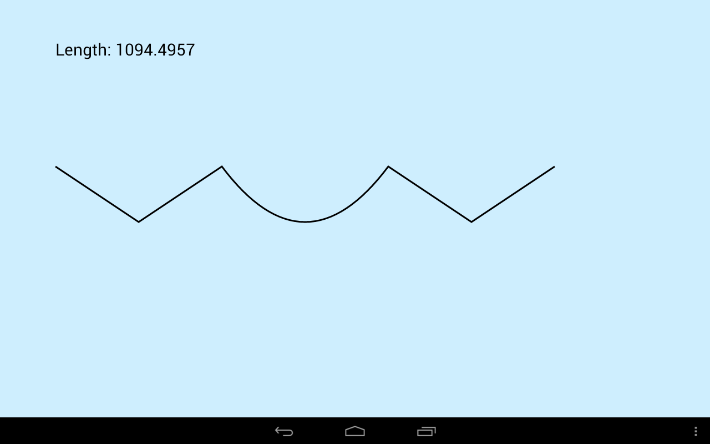
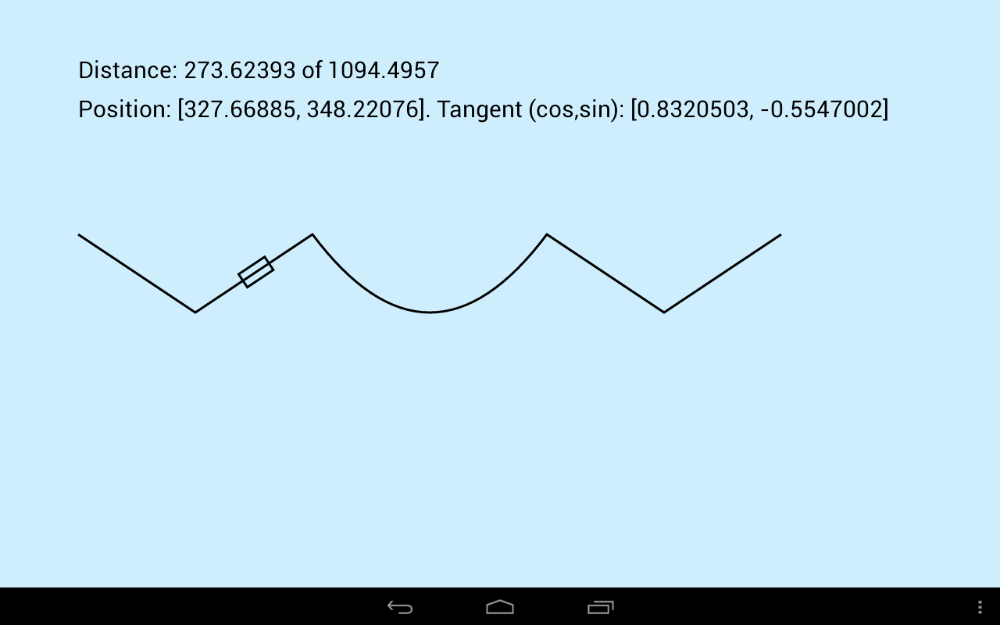

В этом уроке:
- используем PathMeasure для работы c Path
Объект Path мы подробно изучили в Уроке 143. Сейчас рассмотрим PathMeasure, весьма полезный в некоторых случаях инструмент, который умеет:
- вычислять длину сегментов Path
- определять, закрыт или открыт сегмент
- получать координаты и угол наклона для указанной точки Path
- выделять часть Path в отдельный объект
Создадим проект:
Project name: P1501_PathMeasure
Build Target: Android 4.0
Application name: PathMeasure
Package name: ru.startandroid.develop.p1501pathmeasure
Create Activity: MainActivity
MainActivity.java:
package ru.startandroid.develop.p1501pathmeasure;
import android.app.Activity;
import android.content.Context;
import android.graphics.Canvas;
import android.graphics.Paint;
import android.graphics.Path;
import android.graphics.PathMeasure;
import android.os.Bundle;
import android.view.View;
import android.view.Window;
import android.view.WindowManager;
public class MainActivity extends Activity {
final String TAG = "myLogs";
@Override
protected void onCreate(Bundle savedInstanceState) {
super.onCreate(savedInstanceState);
requestWindowFeature(Window.FEATURE_NO_TITLE);
getWindow().setFlags(WindowManager.LayoutParams.FLAG_FULLSCREEN,
WindowManager.LayoutParams.FLAG_FULLSCREEN);
setContentView(new DrawView(this));
}
class DrawView extends View {
Paint paint;
Paint paintText;
Path path;
PathMeasure pMeasure;
float length;
public DrawView(Context context) {
super(context);
paint = new Paint(Paint.ANTI_ALIAS_FLAG);
paint.setStyle(Paint.Style.STROKE);
paint.setStrokeWidth(3);
paintText = new Paint(Paint.ANTI_ALIAS_FLAG);
paintText.setTextSize(30);
path = new Path();
path.moveTo(100, 300);
path.rLineTo(150, 100);
path.rLineTo(150, -100);
path.rQuadTo(150, 200, 300, 0);
path.rLineTo(150, 100);
path.rLineTo(150, -100);
pMeasure = new PathMeasure(path, false);
length = pMeasure.getLength();
}
@Override
protected void onDraw(Canvas canvas) {
canvas.drawARGB(80, 102, 204, 255);
canvas.drawPath(path, paint);
canvas.drawText(String.format("Length: %s", length), 100, 100,
paintText);
}
}
}В onCreate мы флагами убираем заголовок окна и переводим приложение в полноэкранный режим. Позже я поясню, зачем это нужно.
В конструкторе DrawView создаем Path, состоящий из нескольких линий и одной кривой. Далее создаем для него PathMeasure, флаг forceClosed при этом ставим false – нам не нужно закрывать Path. Методом getLength получаем длину Path.
В onDraw рисуем Path и выводим на экран его длину.

Теперь попробуем получить геометрическую инфу о произвольной точке Path.
Перепишем DrawView:
class DrawView extends View {
Paint paint;
Paint paintText;
Path path;
PathMeasure pMeasure;
Matrix matrix;
Rect rect;
float[] pos;
float[] tan;
float length;
float distance;
public DrawView(Context context) {
super(context);
paint = new Paint(Paint.ANTI_ALIAS_FLAG);
paint.setStyle(Paint.Style.STROKE);
paint.setStrokeWidth(3);
paintText = new Paint(Paint.ANTI_ALIAS_FLAG);
paintText.setTextSize(30);
path = new Path();
path.moveTo(100, 300);
path.rLineTo(150, 100);
path.rLineTo(150, -100);
path.rQuadTo(150, 200, 300, 0);
path.rLineTo(150, 100);
path.rLineTo(150, -100);
pMeasure = new PathMeasure(path, false);
length = pMeasure.getLength();
distance = length / 4;
matrix = new Matrix();
pMeasure.getMatrix(distance, matrix,
PathMeasure.POSITION_MATRIX_FLAG
+ PathMeasure.TANGENT_MATRIX_FLAG);
pos = new float[2];
tan = new float[2];
pMeasure.getPosTan(distance, pos, tan);
rect = new Rect(-20, -10, 20, 10);
}
@Override
protected void onDraw(Canvas canvas) {
canvas.drawARGB(80, 102, 204, 255);
canvas.drawPath(path, paint);
canvas.drawText(
String.format("Distance: %s of %s", distance, length), 100,
100, paintText);
canvas.drawText(
String.format("Position: %s. Tangent (cos,sin): %s",
Arrays.toString(pos), Arrays.toString(tan)), 100,
150, paintText);
canvas.setMatrix(matrix);
canvas.drawRect(rect, paint);
}
}В конструкторе DrawView создаем тот же Path, далее создаем для него PathMeasure, измеряем длину и в переменную distance поместим значение равное четверти длины. Далее используем метод getMatrix, передаем в него:
- расстояние от начала Path до точки, информация о которой нам необходима
- матрицу, которая будет заполнена значениями, актуальными для указанной точки
- флаги. Их два POSITION_MATRIX_FLAG – в матрицу попадут данные только по позиции точки, TANGENT_MATRIX_FLAG – в матрицу попадут данные только по повороту в точке. Мы используем сразу оба флага.
Тем самым мы получим матрицу, которая описывает положение и поворот объекта, который находится в точке на расстоянии distance от начала.
Метод getPosTan имеет схожий смысл, но он заполнит не матрицу, а два массива: pos – позиция, tan – наклон (cos и sin угла).
В методе onDraw рисуем Path, выводим значение distance и информацию, полученную из метода getPosTan.
Далее применяем к канве матрицу, полученную из метода getMatrix и рисуем небольшой прямоугольник. Он разместится в точке, которая находится на расстоянии distance и его угол будет соответствовать углу наклона Path в этой точке.

Если из MainActivity.onCreate убрать флаги заголовка и полноэкранного режима, то полученная матрица будет содержать некорректные значения смещения, не учитывающие высоту заголовка и верхней панели. Не знаю, баг это или фича.
Path может состоять из нескольких контуров и PathMeasure умеет их различать.
Перепишем DrawView:
class DrawView extends View {
Paint paint;
Path path;
PathMeasure pMeasure;
public DrawView(Context context) {
super(context);
paint = new Paint(Paint.ANTI_ALIAS_FLAG);
paint.setStyle(Paint.Style.STROKE);
paint.setStrokeWidth(3);
path = new Path();
path.moveTo(100, 300);
path.rLineTo(150, 150);
path.rLineTo(150, -100);
path.rMoveTo(0, 0);
path.rQuadTo(150, 200, 300, 0);
path.close();
path.rMoveTo(0, 0);
path.rLineTo(150, 100);
path.rLineTo(150, -150);
path.close();
pMeasure = new PathMeasure(path, false);
do {
Log.d(TAG,
String.format("Length: %s, isClosed: %s",
pMeasure.getLength(), pMeasure.isClosed()));
} while (pMeasure.nextContour());
}
@Override
protected void onDraw(Canvas canvas) {
canvas.drawARGB(80, 102, 204, 255);
canvas.drawPath(path, paint);
}
}При создании Path мы используем методы moveTo и rMoveTo. Эти методы начинают новый контур в Path. Таким образом у нас получилось три контура. Методом close мы закроем второй и третий контур, первый оставим открытым.
Далее используем nextContour, чтобы перебирать контуры и методами getLength и isClosed получаем длину и выясняем закрыт ли контур. Выводим в лог всю эту информацию.
![]()
На экране видно, что второй и третий контуры закрыты.
Логи говорят об этом же и показывают длину каждого контура (с учетом закрывающей линии):
Length: 392.4096, isClosed: false
Length: 673.3855, isClosed: true
Length: 696.5477, isClosed: true
Выделим часть одного Path в другой Path.
Перепишем DrawView:
class DrawView extends View {
Paint paint;
Path path;
Path path1;
PathMeasure pMeasure;
public DrawView(Context context) {
super(context);
paint = new Paint(Paint.ANTI_ALIAS_FLAG);
paint.setStyle(Paint.Style.STROKE);
paint.setStrokeWidth(3);
path = new Path();
path.moveTo(100, 300);
path.rLineTo(150, 150);
path.rLineTo(150, -100);
path.rQuadTo(150, 200, 300, 0);
path.rLineTo(150, 100);
path.rLineTo(150, -150);
pMeasure = new PathMeasure(path, false);
path1 = new Path();
pMeasure.getSegment(150, 850, path1, true);
}
@Override
protected void onDraw(Canvas canvas) {
canvas.drawARGB(80, 102, 204, 255);
canvas.drawPath(path1, paint);
}
}Используем метод getSegment. Передаем туда расстояние до точки начала (150) и до точки конца (850) нужной нам части Path. Объект path1 будет содержать вырезанную часть объекта path. Четвертым параметром передаем true, чтобы полученная фигура начиналась от стартовой точки. Иначе она начнется с (0,0).
![]()
Мы получили часть Path между точками, лежащими на расстоянии 150 и 850 от начала фигуры.